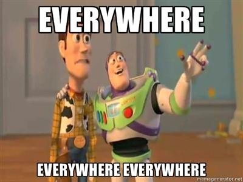

Recently, a friend’s parents died within 2 weeks of each other. Another friend is angry because she doesn’t feel heard. Another struggles with health and physical pain. One’s husband is cheating with a co-worker. One doesn’t know where he’s going to find money for rent.
Life.
It appears to be happening. To us. No matter what the experience, what the pain or fear or circumstance, we seem to be the center point, the common denominator, the one it’s all about.
Despite all those pictures of galaxies and “You are here”s, and despite the never-ending stream of non-dual quotes saying we’re just not that important and that we are, in fact, nothing…
We are still pretty gosh-darn certain we are something, in fact, the main thing. Milky Way or not.
And while of course a case can be made that we’re nothing, and in fact the Mind-Tickler has made that case right here many times…
Still…
The feeling that it’s all about ME is very very strong.
So there's no harm in exploring if it’s possible we’ve been right about this in some way.
I mean, what exactly is there, without little ol’ us?
What colors exist without eyes to see it? What sensations are there without fingertips and nerve-endings? What sounds exist without ears?
Really what’s left without us?
After all, consciousness needs something to be conscious of. And it needs hardware to do that - it needs eyes, ears, nose etc.
Without that hardware, there'd be nothing.
We happen to bring all that to the table.
So regardless of whether we think we're specifically at the center of things, the one to whom things are happening, and regardless of whether the pain, yearning and not-enoughness that comes with being an individual feels very personal...
Experience- color, sound, smell, sensation- happens. No matter what thoughts or perspective tag along with it.
So what if we were somehow able to set aside that centralized point of view for just a moment, and consider the possibility that we are experience itself, rather than the one it happens to, or rather than the one who witnesses? What if we could remove all that personal ME-centered-ness completely and look again?
Well then…
Holy cow…
We’re IT.
We’re experience itself. Literally the fulcrum in which everything happens.
The line between us and what happens? Nonexistent.
The deaths, tears, pains, cheating husbands, money fears? We’re all of that.
We’re the universe, existence, every color, shape, sound, feeling, thought.
Not in a life, or having a life, or experiencing a life, thinking about a life, witnessing a life...
But actual life itself. We're all of it. God. The universe. Everything.
There’s only one thing. That thing is us.
We’re a requirement.
Can’t get more important than that.
See? We knew it!
Ok sure, we may not be in one locatable place, but being everything everywhere is still kind of OK, isn’t it?
I mean, talk about special. Talk about mattering.
Look at us.
Wow.
Everything Everywhere
